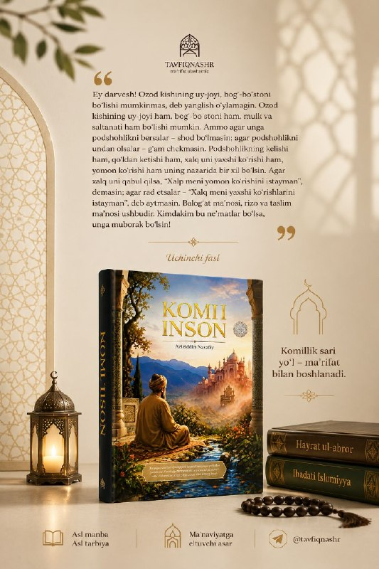
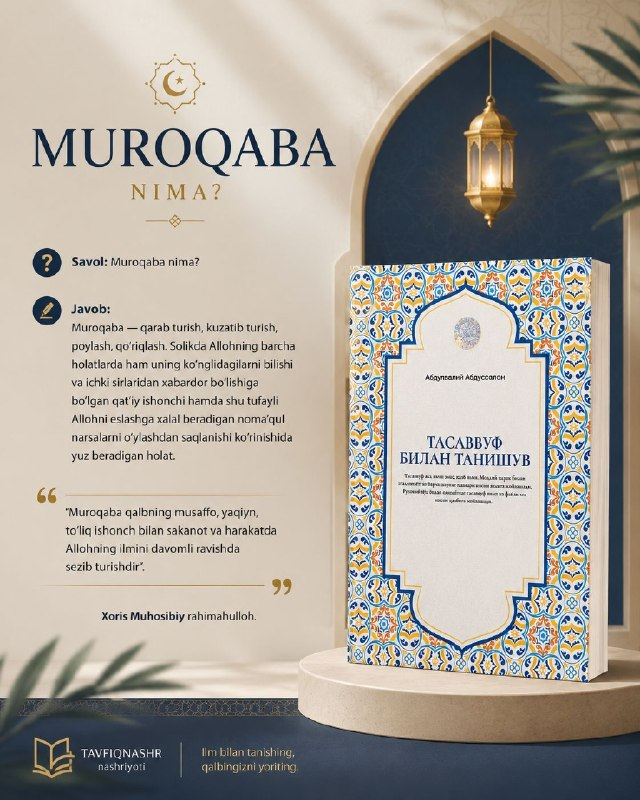
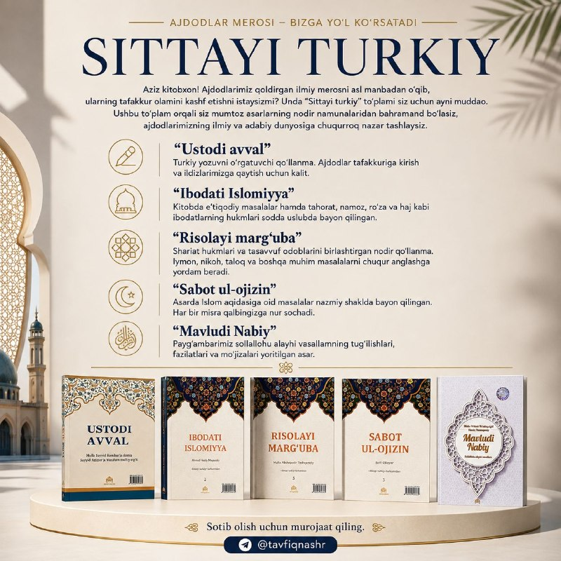

Камиль инсан (Совершенный человек)
Редкий образец классической литературы тасаввуфа. Смыслы свободы, довольства и покорности, путь к совершенству — главы, начинающиеся с обращения «О дервиш!».
Путь к совершенству начинается с ма‘рифата.
Бисмиллях ир-Рахман ир-Рахим
TAVFIQNASHR — издательство, выпускающее книги по тасаввуфу и вероучению, классическое тюркское наследие наших предков, а также труды по современным областям знания. Каждое наше издание опирается на первоисточник.
О нас
Главное внимание наше издательство уделяет содержанию книги и тому, насколько она опирается на достоверный источник. Труды по тасаввуфу и нравственности, пособия по вопросам поклонения и вероучения, образцы классического тюркского письменного наследия — всё готовится на основе древних списков и авторитетных источников.
Наши издания религиозного содержания выходят на основании заключения Комитета по делам религий при Кабинете Министров Республики Узбекистан.
Опираемся на древние и широко распространённые списки.
Твёрдый переплёт, вёрстка для удобного чтения.
Сложные вопросы изложены понятно и ясно.
Подготовлено на основании заключения Комитета по делам религий.

Новинка
Более тысячи лет чтение салавата Посланнику Аллаха, да благословит его Аллах и приветствует, остаётся одной из ежедневных обязанностей верующих нашей страны. Настоящее издание подготовлено на основе древних списков, широко распространённых среди нашего народа.
Перевод салаватов на узбекский язык не приводится — читатели, владеющие арабской грамотой, могут читать текст напрямую.
Оформить заказНаши издания
Труды на пути тасаввуфа, вероучения и ма‘рифата — издания, опирающиеся на первоисточник.

Редкий образец классической литературы тасаввуфа. Смыслы свободы, довольства и покорности, путь к совершенству — главы, начинающиеся с обращения «О дервиш!».
Путь к совершенству начинается с ма‘рифата.

Термины тасаввуфа в форме вопросов и ответов: муракаба, мушахада, тааммуль, таква, футувва и другие понятия — просто и точно.
Единство шариата и тариката — основа того, чтобы стать совершенным человеком.

Собрание, подготовленное для чтения научного наследия предков по первоисточнику. Подробный состав — ниже.
Состав серииСерия
Наследие предков указывает нам путь. Через это собрание вы приобщитесь к редким образцам классических произведений.
Пособие по обучению тюркской письменности. Ключ к мышлению предков и возвращению к своим корням.
Изложены вопросы вероучения, а также предписания о тахарате, намазе, посте и хадже — простым языком.
На основании заключения Комитета по делам религий №03-07/7555 от 18 ноября 2025 года
Редкое пособие, объединившее предписания шариата и адабы тасаввуфа. Помогает глубже понять вопросы веры, никаха, талака и другие важные темы.
На основании заключения Комитета по делам религий №0207/6794 от 14 ноября 2024 года
Вопросы исламского вероучения изложены в стихотворной форме. Каждая строка проливает свет на сердце.
Произведение о рождении, достоинствах и чудесах Пророка Мухаммада, да благословит его Аллах и приветствует.
Из наших книг
Спокойствие и умиротворение — не в имуществе и не в должности. Умиротворение — в безопасности, здоровье, достаточном уделе и беседе с мудрыми.
Оковы — будь они из золота или из железа — остаются оковами. У свободного человека нет ни пут, ни оков.
Футувва — это не стыдиться бедных и не смотреть с гордостью на богатых.
Муракаба — это непрестанное ощущение сердцем знания Аллаха, в покое и в движении, с чистотой и полной убеждённостью.
Контакты
Наши книги заказываются через Telegram. Если у вас есть вопросы — напишите или позвоните, и мы ответим, инша Аллах.